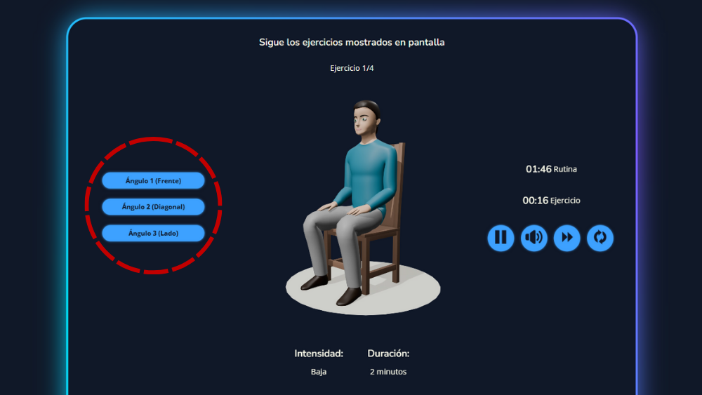
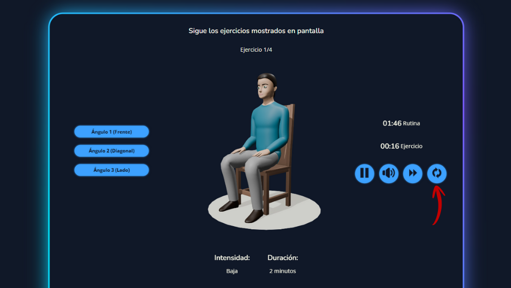
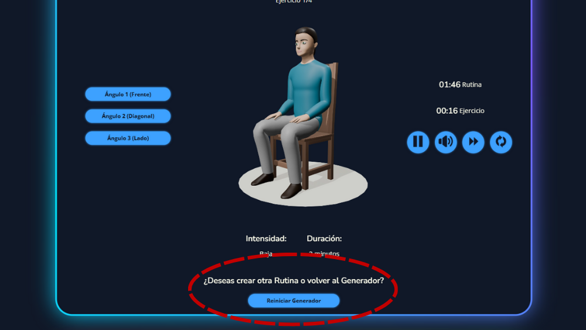

Puedes cambiar el ángulo de visualización con los botones de la izquierda:

Puedes pausar la rutina con el botón de pausa:
Puedes silenciar o reactivar los audios y la música con el botón de sonido:
Puedes saltar el ejercicio con el botón de siguiente:
Puedes reemplazar el ejercicio con el botón de reemplazo:

En cualquier momento puedes reiniciar el generador con el botón reemplazar el ejercicio con el botón que está debajo de la rutina:
